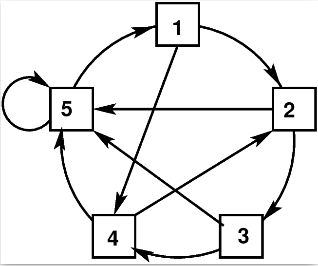

When we search the web, Google not only
finds all the pages, but also ranks them in the order of
importance. This ranking is a complex affair, depending on
importance of the webpage itself, as well as other considerations
like your identity, search history, revenue generation etc. The
entire algorithm is propreitary. But here I shall discuss a
simpler version that is taken from the PhD thesis of Larry Page,
one of the founders of Google. I shall discuss this using a toy
example. Consider this little internet.

A little internet
Here each square is a webpage. The links are shown as
arrows. Just by looking at this, can you guess which page is the
most important? A first attempt could use the number of incoming
links: a page must be important if lots of other pages link to
it. So 5 must be a very important page, and 1 and 3 are both
least important. But wait a second! Shouldn`t 1 also be pretty
important, because though it has just a single incoming link,
yet that single link comes from 5, which itself is a bigshot! So
it seems that importance of a page may depend on the importance
of its neighbours, which in its turn may depend indirectly on the
page we are trying to find the importance of. This makes the
problem complicated. Let`s see how a little statistical modelling
helps us here.
Imagine a random surfer, one who visits a page, clicks any
outgoing link at random (equal chance to each link), and
continues indefinitely like that. Keep a track of the proportion
of times he visits each page. The pages visited most often must
be the more important ones.
link = matrix(c(2,3,4,2,1,4,5,5,5,5),5,2)
x = numeric(1000)
x[1] = sample(5,1)
for(i in 2:1000) x[i] = link[x[i-1],sample(2,1)]
barplot(table(x))
Suppose that we want to estimate the number of fish in a lake.
One method is to drain out the lake, and count all the fish. But
this is not practicable. A viable alternative is provided by the
capture-recapture method.
The process proceeds in two steps: capture and recapture. In the
capture step we catch (a random) sample of fish, tag them, and
return them to the lake. After allowing sufficient time for these
released fish to mix up in the population, we recapture another
(random) sample of fish, and count the number of tagged fish
among the recaptured fish. Using this number, we can estimate the
total number of fish as follows.
Let $N$ be the population size (to be
estimated). Let $m$ and $n$ be the capture and
recapture sizes, respectively. Let $X$ be the number of
tagged fish among the recaptured ones. Since our recapture was a
random sample, we may reasonably(?) assume that the proprtion of
tagged fish in the sample is approximately equal to the proprtion
of tagged fish in the population:
$$
\frac mN\approx \frac Xn.
$$
From this we get $\hat N = \frac{mn}{X}.$
This is a crude estimator. But the same idea may be made more
sophisticated by increasing the number of capture and recapture
stages.
In practice, this method is not used for counting fish, but for
counting tigers using camera trapping. Cameras are scatterred at
different locations throughout a forest. These take pictures of
tigers when they happen to pass in front of them. This plays the
role of both capture and recapture. Each tiger has its unique
stripe pattern, which serves as the tagging.
You may find more details
in this book.
This is something you may be familiar with
from your school days. A living being often shows traits that
are genetically controlled. You cannot learn or unlearn them. For example,
some people can roll their tongues, while others cannot. It is
natural to expect that heredity plays a part in this, but no
clear mathematical relation is known to exist between the
parents' traits and the offspring's trait. Thus, even if I tell
you that my father could not roll his tongue, while my mother
could roll hers, you cannot say for certain whether I can roll
mine. It is here that one uses a statistical model.
It says that each person has a coin inside that determines
whether they are a roller. The coin has two sides, and each side
bears an inscription, which could be either "Yes" or "No". If at
least one side says "Yes", then the person is a roller. Now when
this person mates with another person to produce an offspring,
they create a new coin for the offspring as follows. They both
toss their coins, and see which side comes up. They write those
two inscriptions on the two sides of the new
coin, thus determining the trait of the offspring.
All this may sound ridiculous. Indeed, most statistical models do
sound hopelessly naive. But sometimes they end up explaining the
reality quite well, better than any other proposed model! Indeed there is
a famous saying by the statistician David Cox: All statistical
models are wrong, but some are useful!